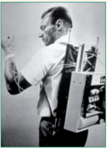
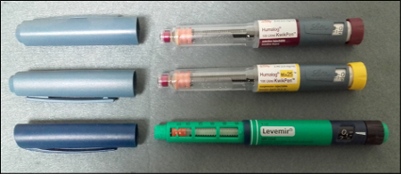
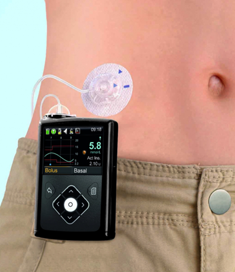
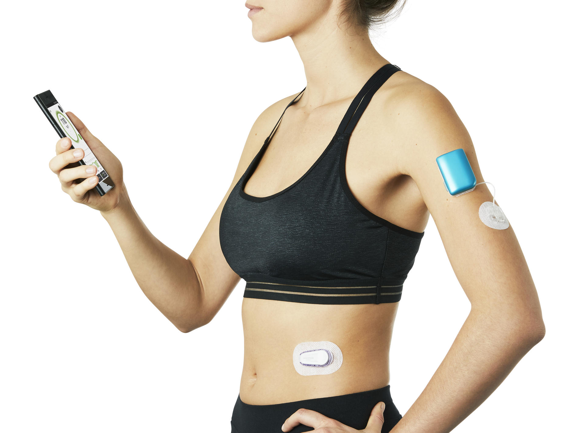

Nous allons voir le diabète en deux points essentiel pour se faire une meilleure idée de cette maladie encore victime de clichés.
On sait que chez une personne diabétique, le pancréas ne produit plus d'insuline. Elle doit donc s'injecter de l'insuline artificielle.
Mais cette hormone a une longue et belle histoire avant d'être découverte par des médecins ingénieux.
De la fabrication à la mise à disposition sur le marché, tout est calculer
Les pays les plus touchés par le diabète sont les pays en voie de développement. Ces pays sont ammenés à connaître une explosion de cette pathologie durant les 30 prochaines années.
Etre diabétique signifie se soigner toute sa vie. Heureusement les méthodes et la médecine évolue et permettent aux patients d'avoir le choix de leur traitement.
 Avant la pompe à insuline, les stylos à insuline ont été le seul moyen de s'injecter de l'insuline
Ceci est la première pompe à insuline de l'histoire en 1978
De nos jours, la pompe à insuline (ici avec tubulure) est le moyen le plus courant pour traiter le diabète
L'omnipod est également de plus en plus chosi car cette pompe a l'avantage de ne pas avoir de tubulure (fil tranparent permettant à l'insuline de circuler)
Diabeloop est une pompe "nouvelle génération". Elle n'est pas encore sur le marché mais elle promet d'être révolutionnaire car elle fonctionnera seule et sera capable d'adapter elle même les doses d'insuline du patient.
Ces appareils sont couteux et ce n'est pas tout le monde peut se permettre de se les offrir. C'est un véritable privilège de pouvoir s'en servir car tout est fait pour rendre le quotidien d'un diabétique plus agréable.
Dans les pays en voie de développement ou où le système de santé n'est pas rembourser, beaucoup de personnes décèdent faute d'argent ou de traitement. Le diabète serait responsable d'environ 1 millions de décès par an.
Il existe une variété de diabète mais les plus connu sont le diabète de type 1 (appellé aussi diabète de l'enfant ou diabète insulinodépendant), le diabète de type 2 (appellé aussi diabète gras ou diabète insulinorésistant) et le diabète gestationnel qui concerne les femmes enceinte.
created with
Website Builder Software .